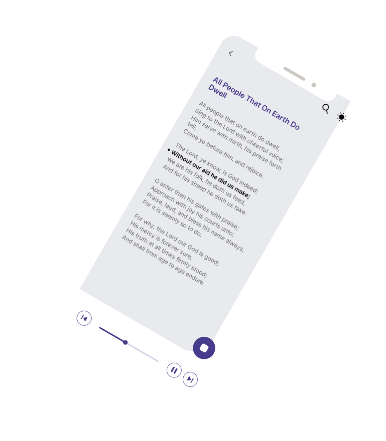
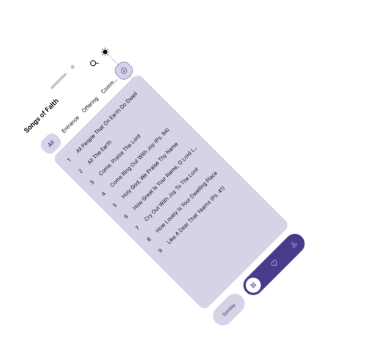
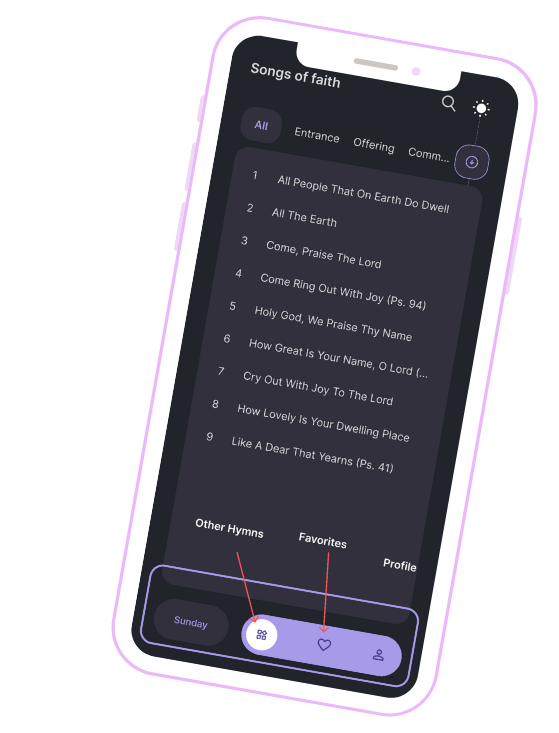

Parcourir et rechercher
Trouvez facilement des cantiques par titre, paroles ou thème. Découvrez-en de nouveaux grâce à des playlists sélectionnées et des recommandations personnalisées.


Enrichissez votre louange avec l’appli de cantiques ! Accédez à une vaste collection de cantiques intemporels, chantez avec des playlists personnalisables et approfondissez votre lien spirituel, à tout moment et en tout lieu. Redécouvrez la beauté de la musique sacrée avec cette appli simple et enrichissante.
Une bibliothèque complète de cantiques bien-aimés, avec les paroles et des versions audio facultatives pour chanter et apprendre facilement.
1Créez votre propre collection en marquant vos favoris, en organisant des playlists, en explorant des catégories sélectionnées et en personnalisant l’apparence de l’appli avec différents thèmes et tailles de police.
2Approfondissez votre foi, trouvez réconfort et inspiration, et découvrez de nouvelles profondeurs de sens grâce à la force intemporelle des cantiques.
3
Que vous recherchiez du réconfort, de l’inspiration ou un lien plus profond avec votre foi, notre appli met une vaste collection de cantiques bien-aimés à portée de main. Redécouvrez la force et la beauté des cantiques traditionnels avec notre appli complète, conçue pour approfondir votre vie spirituelle, transformer votre louange et vous rappeler que chanter, c’est prier deux fois.
Trouvez facilement des cantiques par titre, paroles ou thème. Découvrez-en de nouveaux grâce à des playlists sélectionnées et des recommandations personnalisées.
Organisez vos cantiques préférés en playlists pour différentes occasions ou humeurs. Partagez vos playlists ou explorez celles de la communauté.
Plongez dans le mode karaoké avec les paroles synchronisées et les partitions. Explorez différentes traductions et interprétations.

Nos captures d’écran vous donnent un aperçu des fonctionnalités de l’appli : une interface intuitive, la navigation et la recherche, les playlists personnalisées et l’expérience de chant. Découvrez le design de l’appli et comment elle peut enrichir votre louange par la musique sacrée.
Suivez @cameroonhymns sur TikTok pour des extraits de cantiques, des coulisses et nos derniers moments de louange. Les dernières vidéos s’affichent automatiquement ci-dessous.